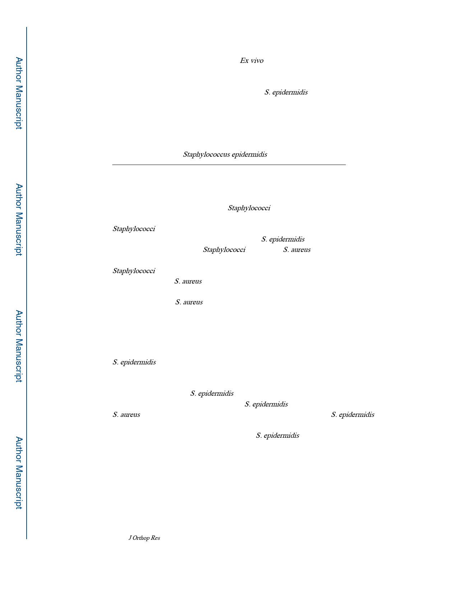

Tomizawa et al.
Page 2
expression studies revealed that IL-1β, IL-6, RANKL, and TLR-2 mRNA levels in RP62A
infected bone were increased versus Sterile controls. Ex vivo push-out testing showed RP62A
infected implants required significantly less force compared to the Sterile group (7.5±3.4 N vs.
17.3±4.1 N; p<0.001), but required 10-fold greater force than USA300 infected implants (0.7±0.3
N; p<0.001). Taken together, these findings demonstrate that S. epidermidis is a commensal
pathogen whose mechanisms to inhibit osseous integration are limited to minimal biofilm
formation on the implant, and low-grade inflammation.
Keywords
implant-associated osteomyelitis; Staphylococcus epidermidis; biofilm; loosening
INTRODUCTION
Orthopaedic implant related infections remain a devastating problem that threatens life,
wellness and our healthcare systems1. Staphylococci species are responsible for the majority
of implant-associated osteomyelitis, and account for ~80% of cases1,2. Historically,
Staphylococci were distinguished by their ability to produce coagulase; the virulent enzyme
which causes fibrin to clot3. Examples of this are S. epidermidis, which is a representative
species of coagulase-negative Staphylococci (CNS), and S. aureus, which is the most
common coagulase-positive organism in implant-associated infection. Clinically,
Staphylococci strains are further defined by their resistance to methicillin, and the
methicillin-resistant S. aureus (MRSA) strain USA300 is known to be the most challenging
to treat 4. Previous studies have documented cure rates of 57% from MRSA, 72% from
methicillin-sensitive S. aureus, and 82% from CNS, at 1 year.5 In a multicenter, study, the
failure rate of treatment for MRSA knee infections was much as 84%.6 To make matters
worse, the emergence of community acquired USA300 strains is a serious problem,7 as
mortality rates from these infections are twice that of trauma and elective orthopaedic wards.
8
S. epidermidis is a ubiquitous member of the human skin microbiome, and lacks aggressive
virulence properties overall. It is also the most common CNS present in implant-associated
osteomyelitis, and therefore is considered to be a commensal pathogen2. Otto et al.
demonstrated the roles of S. epidermidis in harmonizing the epithelial microflora.9
Additionally, Iwase et al. demonstrated that S. epidermidis is associated with suppression of
S. aureus,10 which suggests a protective role against infection. However, S. epidermidis is
also considered to be an opportunistic pathogen, as it causes infections in
immunocompromised patients with implants.11 S. epidermidis is also present on prosthetic
joint infection (PJI),12 and implants removed for aseptic prosthesis loosening.13
Interestingly, late-start chronic (low-grade) PJI, which are challenging to diagnose from
unspecific clinical signs, false-negative cultures, and low values of serum biomarkers,14
often contain CNS as the hidden pathogen.15 Perviously, it has been reported that 8.3% of
“aseptic” total joint replacement revisions are actually bacterial culture positive following
sonication of the implant, in which CNS was positive in most of these cases.16 In another
report, CNS was detected in 5 out of the 22 cases from patients diagnosed with “aseptic”
J Orthop Res. Author manuscript; available in PMC 2021 April 01.